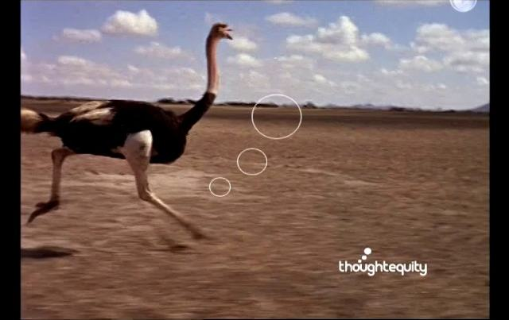
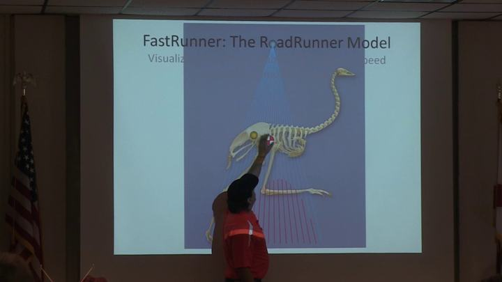
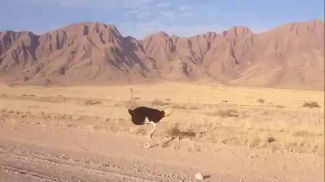
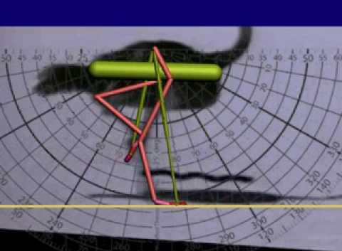
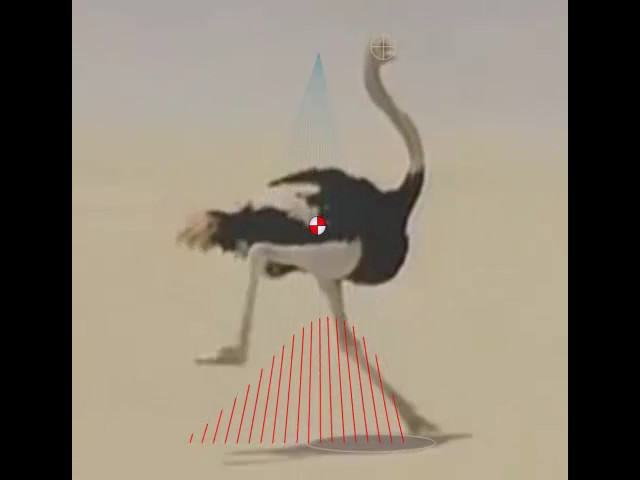

Biology: legs, tendons & springs
Johnny studied the ostrich, the fastest two-legged animal, and copied its geometry: an elastic leg, a forward-placed center of gravity, and feet that trace a big invisible wheel.

26 sTendons are springs. They store energy as the leg lands and give it back as it pushes off, like a pogo stick. To compare a sparrow, an ostrich and a robot fairly, Johnny uses dimensionless velocity: speed divided by √(g × hip height). One unit is 7 mph for a 1 m hip, and Usain Bolt's top speed is about 4.
Interactive
Try this
- Tap “Bolt sprint”: v̂ ≈ 4, matching Johnny's number.
- Tap the 1.5-inch wheel: v̂ ≈ 7–8. Johnny says “dimensionless velocity eight”.
- Tap “XTI walker”: a passive walker is slow (v̂ ≈ 0.4), well inside walking.
- Grad: why can't anything walk faster than v̂ ≈ 1? Hint: centripetal acceleration of the hip.
v̂ = v/√(g l) = √Fr. Animals switch from walking to running near Fr ≈ 0.5 and can't walk above Fr ≈ 1 (Alexander 1989), because gravity can't keep the hip on its arc. Johnny's 60° pendulum: dropping l/2 converts to v = √(g l), so v̂ = 1. Ground forces in fast bipeds peak early in stance and converge near a point above the CG (“metacenter”, ≈1.8× CG height per Johnny, Part 6, 01:34), closely related to the virtual pivot point (Maus et al. 2010).
More from the Xobotix channel
 49 s
49 s
67 s


Media: Xobotix / Chance Robotics
From the Xobotix lectures
“There's just no time for a neural impulse to travel. Neural impulses travel at highway speed and we're running at highway speed. So all the stability we see is geometric purely.”
Johnny Godowski, Part 6 · 00:21 · auto-captions, [corrections] ours
“That's why the ostrich body bobs up and down as it runs. It's not even thinking about it. It's just in the throttle setting. It's all geometric. It's all simply mechanical.”
Johnny Godowski, Part 6 · 01:10 · auto-captions, [corrections] ours
“dimensionless velocity unit one for humans of 1 meter hip height it works out … exactly to seven miles an hour”
Johnny Godowski, Part 3 · 03:53 · auto-captions, [corrections] ours
“why do we offset the CG forward why is the human spine shaped like an [S-curve] … we have … our CG offset forward deliberately as a design parameter”
Johnny Godowski, Part 3 · 01:59 · auto-captions, [corrections] ours
Quotes are YouTube auto-captions from the Xobotix channel. [Brackets] mark our corrections of misheard words, and timestamps open the video at that spot. Full notes: research/SCIENCE_FROM_LECTURES.md.